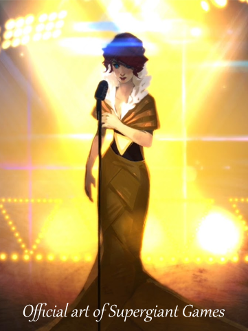
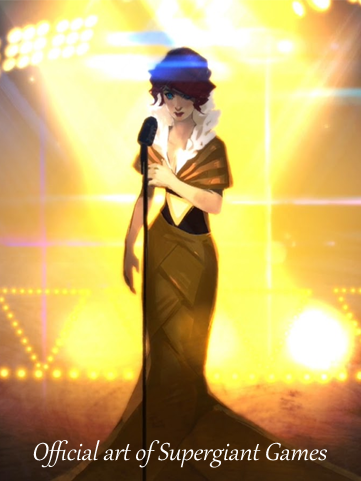

Red - Transistor [WORK IN PROGRESS]
Red has been a end-game project of mine for years. I kept telling myself that I would make her gown (and her glowing, talking sword) when I have the sewing skills, when I'm ready to wire some LEDs. when I've shed some excess weight, etc. No more excuses. As of 2022, Red will be my main project. Currently (12/27/2021), she is a pile of fabric, necessitating the use of official artwork for her thumbnail.
Red is the heroine of Transistor, an indie video game by Supergiant Games with an award-winning soundtrack. Its setting crosses a cyberpunk dystopia with the glamour of the Roaring Twenties. This sets the inspiration for her gown firmly in the Art Deco/Art Nouveau era.
The plan is to create the following:
- a short torn gown
- a long tearaway skirt
- a leather corset belt
- a feather headdress
- false knee high boots
- bodyguard's jacket, not pictured
- then, the Transistor:
- Cut acrylic sheets
- Strip LED lights
- A speaker/listener
- An arduino to to sync sound and light
While Red's slinky evening gown pales in comparison to the size of Portia's Masquerade gown, I expect the cutting and wiring of the Transistor to expand the timeline of the project significantly. I hope to complete it within the year.
An estimation on cost, exluding sword and value of labor, should be about $200; this is slightly lower than usual because it may be the first project to use my real hair instead of investing in a wig.